ClinicusMed · Dossiê Clinicus — Padrão de Excelência
Es el epitelio capaz de sintetizar sustancias y liberar su producto (secreción). Se contrapone al epitelio de revestimiento, que forma hojas que recubren o tapizan el organismo.
| Tipo | Definición |
|---|---|
| Exócrinas | Liberan su producto de secreción por medio de un sistema de conductos que se abren en la superficie externa o interna. |
| Endócrinas | Liberan su producto de secreción a la sangre. Ej.: las hormonas. |
| Porción | Descripción |
|---|---|
| Porción secretora (adenómero) | Parénquima — parte que produce la secreción. |
| Porción conductora (excretora) | Conducto que lleva la secreción hasta la superficie. |
| Estroma | Todo el tejido conectivo circundante que invade y apoya el parénquima. |
| Tipo | Definición | Ejemplo |
|---|---|---|
| Unicelular | Se compone de una sola célula. | Célula caliciforme — secreta mucina (75% H.C., 25% proteínas) |
| Multicelular | Se compone de diferentes tipos de células; se reconoce por el grado de ramificación de los conductos excretores; puede ser simple o compuesta. | Glándulas salivares, sudoríparas, etc. |
| Forma | Ejemplo |
|---|---|
| Tubular | Glándulas sudoríparas, glándulas de Lieberkühn |
| Tubular ramificada | — |
| Tubular enrollada | Glándula sudorípara |
| Acinar / acinosa | Glándulas acinopancreáticas |
| Acinar ramificada | — |
| Alveolar | Glándulas mamarias |
| Túbulo-acinar | — |
| Tipo | Definición |
|---|---|
| Simples | Una sola vía de salida — el conducto no es ramificado. |
| Compuesta | Varias vías de salida — el conducto es ramificado. |
| Tipo | Características | Ejemplo |
|---|---|---|
| Mucosa | Secreta mucina de aspecto claro; núcleo aplanado; citoplasma lleno de secreción; se parece a un disco. | Glándula mucosa del esófago |
| Serosa | Citoplasma basófilo; ápice eosinófilo; núcleo redondeado con gránulos de secreción visibles; se parece a una tarta. | Ácinos serosos del páncreas |
| Mixta | Posee células mucosas y serosas; las serosas en forma de semiluna (von Ebner). | Glándula sub-maxilar |
| Tipo | Definición | Ejemplo |
|---|---|---|
| Merócrina | Se lleva a cabo por exocitosis; se libera el producto sin pérdida de sustancia celular. | Células acinares pancreáticas |
| Apócrina | Una parte del citoplasma apical se libera junto con el producto de secreción. | Glándula mamaria lactante |
| Holócrina | Se pierden células enteras, destruidas en su totalidad. | Glándulas sebáceas de la piel |
Atlas de Histologia de acesso livre da Editora PUCRS — cobre tecido epitelial glandular, com classificação por morfologia. Use este atlas como referência visual complementar para as lâminas do laminário que foram substituídas por marca d'água/copyright de terceiros (ver aba Galeria).
🔬 Não carregou aqui? Abre em tela cheia (nova aba) ↗
Material produzido pela Editora PUCRS (EDIPUCRS) — acesso livre. Conteúdo exibido diretamente do site oficial.
Perguntas originais do laminário do professor. As respostas sugeridas são complemento Clinicus (histologia geral) — confirme sempre com o gabarito oficial. Lâminas com marca d'água/copyright de terceiros foram substituídas pelo Atlas PUCRS.
Classifique esta glândula segundo a forma do adenômero:
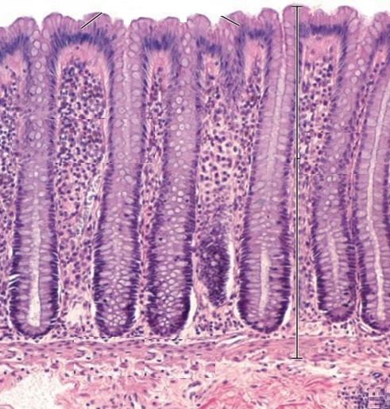
Classifique esta glândula segundo o mecanismo de secreção e o número de células:
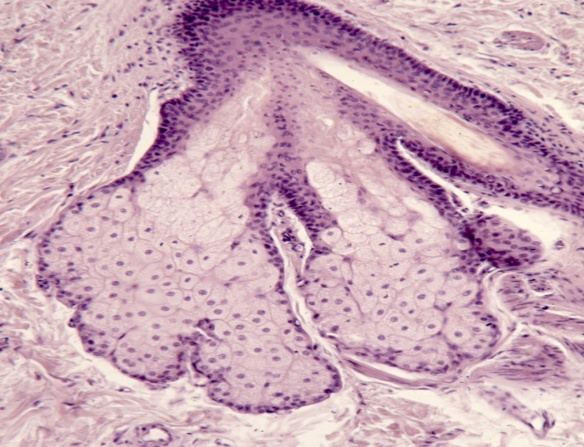
Glândula multicelular; mecanismo compatível com secreção holócrina (acúmulo de secreção lipídica intracelular com desintegração celular — padrão de glândula sebácea).
COMPLEMENTO CLINICUS — confirme com o gabarito oficial do professor.
Classifique esta glândula segundo o tipo de secreção e a forma do adenômero:
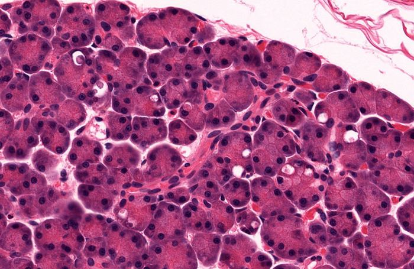
Secreção serosa (citoplasma basófilo, núcleo redondo, grânulos de secreção visíveis) — adenômero acinar, semelhante a ácinos pancreáticos.
COMPLEMENTO CLINICUS — confirme com o gabarito oficial do professor.
Classifique esta glândula segundo o tipo de secreção. Diga 3 características histológicas desta glândula:
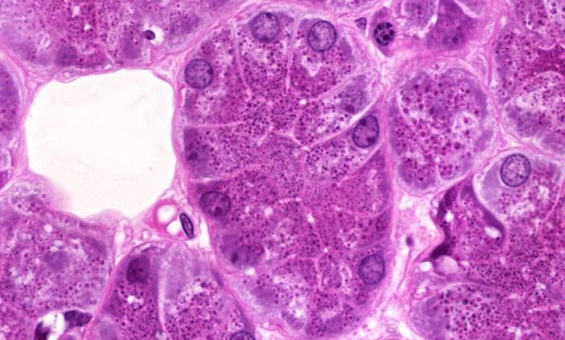
Painel superior: glândula mucosa (citoplasma pálido/espumoso, núcleo achatado na base). Painel inferior: glândula serosa (citoplasma eosinofílico, núcleo esférico central, grânulos de zimogênio).
COMPLEMENTO CLINICUS — confirme com o gabarito oficial do professor.
Classifique esta glândula segundo o tipo de secreção. Diga 3 características histológicas desta glândula:
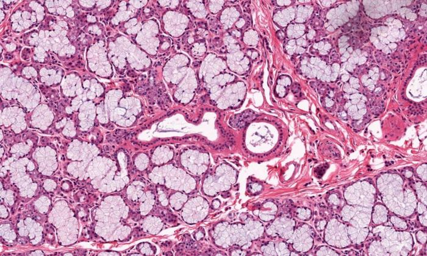
Ácinos mucosos (citoplasma claro, núcleos periféricos achatados) em corte de glândula salivar menor.
COMPLEMENTO CLINICUS — confirme com o gabarito oficial do professor.
Esta glândula se trata de um mucoseroso. Falso ou verdadeiro? Justifique se é falsa.
🔬 Ver no Atlas PUCRS (nova aba) ↗
Nomeie esta glândula segundo o número de células:
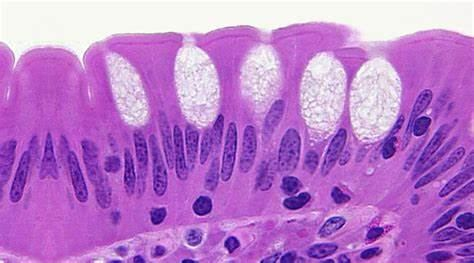
Glândula unicelular — célula caliciforme (goblet cell) da mucosa intestinal, secreção de mucina.
COMPLEMENTO CLINICUS — confirme com o gabarito oficial do professor.
Classifique esta glândula segundo o tipo de secreção e o número de células:
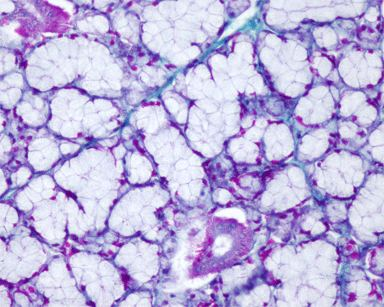
Glândula multicelular mucosa — ácinos com citoplasma claro/espumoso característico de secreção mucosa (coloração especial evidenciando mucopolissacarídeos).
COMPLEMENTO CLINICUS — confirme com o gabarito oficial do professor.
Segundo mecanismo de secreção:
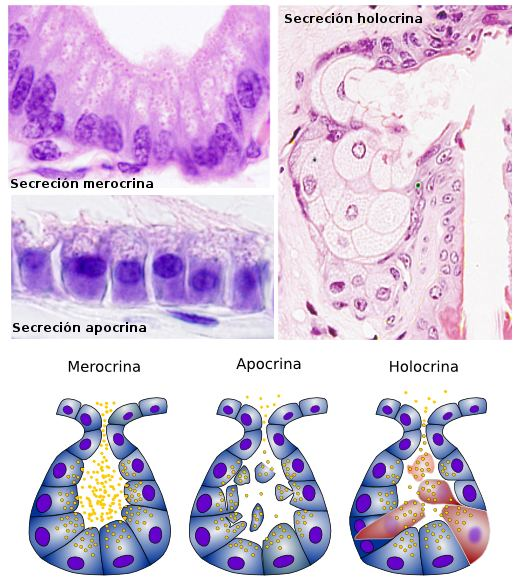
Epitélio colunar com secreção apical visível — compatível com secreção merócrina (exocitose, sem perda de substância celular).
COMPLEMENTO CLINICUS — confirme com o gabarito oficial do professor.
Nomeie esta lâmina segundo o tipo de secreção:
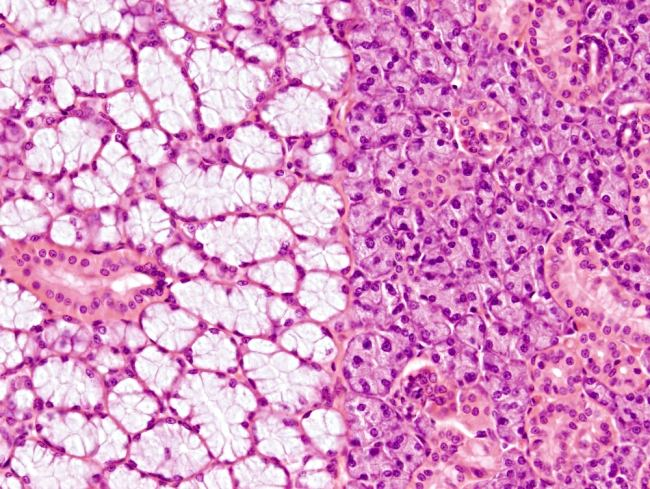
Glândula mista/seromucosa (ex.: submandibular) — ácinos mucosos claros de um lado e ácinos serosos eosinofílicos do outro, lado a lado.
COMPLEMENTO CLINICUS — confirme com o gabarito oficial do professor.
Nomeie esta lâmina segundo o tipo de secreção:
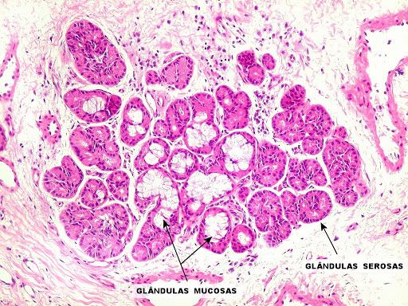
Glândula mista com regiões mucosa e serosa rotuladas.
COMPLEMENTO CLINICUS — confirme com o gabarito oficial do professor.
Segundo número de células:
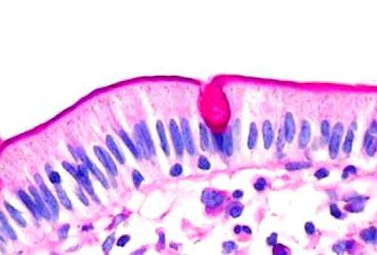
Glândula unicelular — célula caliciforme, mesmo padrão da lâmina 8.
COMPLEMENTO CLINICUS — confirme com o gabarito oficial do professor.
Classifique esta lâmina segundo a porção secretora e o sistema de condutos:
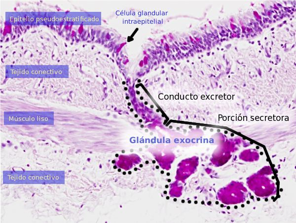
Glândula exócrina simples: porção secretora + conduto excretor sobre epitélio pseudoestratificado, com músculo liso e tecido conectivo adjacentes.
COMPLEMENTO CLINICUS — confirme com o gabarito oficial do professor.
Classifique esta lâmina segundo a porção secretora e o sistema de condutos:
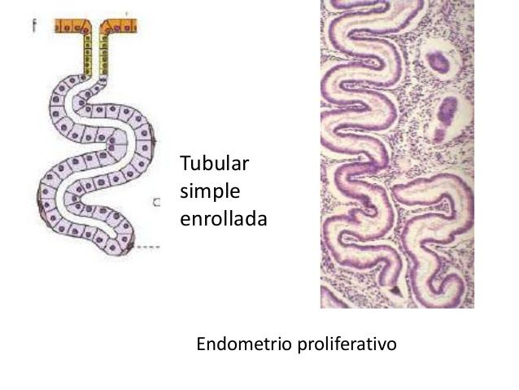
Glândula tubular simples enrolada — padrão de glândula sudorípara (porção secretora enovelada).
COMPLEMENTO CLINICUS — confirme com o gabarito oficial do professor.
Classifique esta lâmina segundo a porção secretora e o tipo de secreção:
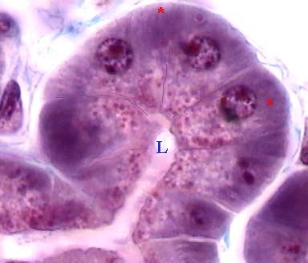
Adenômero acinar com lúmen central (L) visível — secreção serosa/mista, corte transversal de ácino glandular.
COMPLEMENTO CLINICUS — confirme com o gabarito oficial do professor.
Nomeie esta lâmina segundo a porção secretora e o sistema de condutos:
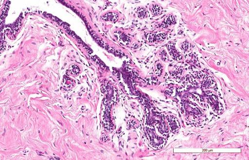
Sistema de ductos excretores ramificados na derme, associados a glândulas anexas — escala de referência 200 μm visível na própria lâmina.
COMPLEMENTO CLINICUS — confirme com o gabarito oficial do professor.
Nomeie esta lâmina segundo o tipo de secreção:
🔬 Ver no Atlas PUCRS (nova aba) ↗
Nomeie esta lâmina segundo a porção secretora e sistema de condutos (esquemas 1, 2, 3):
🔬 Ver no Atlas PUCRS (nova aba) ↗
Nomeie esta lâmina segundo a porção secretora e o sistema de condutos:
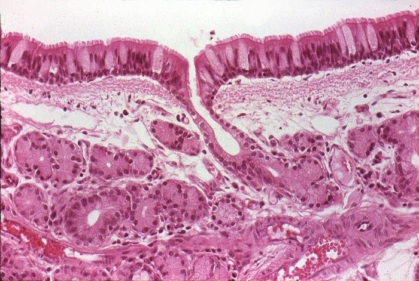
Abertura de ducto excretor entre epitélio colunar ciliado/pseudoestratificado, com ácinos glandulares subjacentes.
COMPLEMENTO CLINICUS — confirme com o gabarito oficial do professor.
Nomeie esta lâmina segundo a porção secretora e o sistema de condutos:
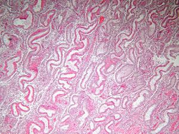
Porção secretora tubular enrolada — padrão de glândula sudorípara em corte tangencial.
COMPLEMENTO CLINICUS — confirme com o gabarito oficial do professor.
Nomeie esta lâmina segundo o tipo de secreção:
🔬 Ver no Atlas PUCRS (nova aba) ↗
Tipo de glândula — identifique o círculo e a seta:
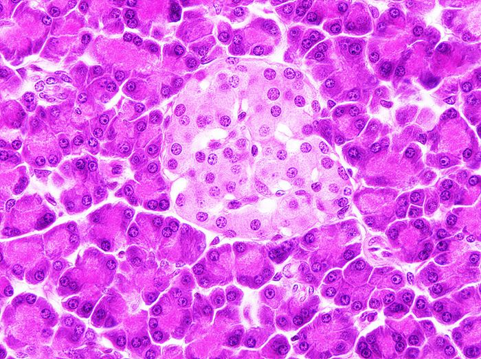
Corte de ácino seroso (padrão pancreático); círculo destaca lúmen/centroacinar, seta indica célula acinar típica.
COMPLEMENTO CLINICUS — confirme com o gabarito oficial do professor.
Nomeie esta lâmina segundo o mecanismo de secreção:
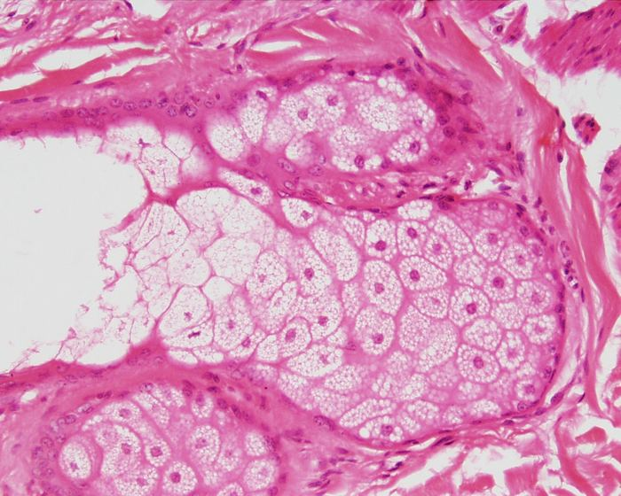
Secreção holócrina — glândula sebácea, com células centrais em desintegração liberando todo o conteúdo citoplasmático.
COMPLEMENTO CLINICUS — confirme com o gabarito oficial do professor.
Descreva esta lâmina (ácino seroso / ácino misto):
🔬 Ver no Atlas PUCRS (nova aba) ↗
Descreva esta lâmina:
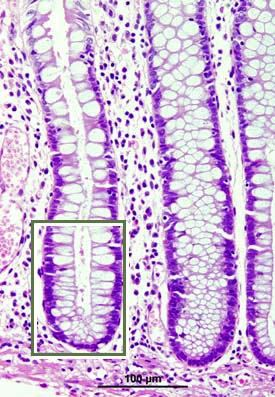
Criptas colônicas (glândulas de Lieberkühn) — epitélio simples colunar rico em células caliciformes; escala de 100 μm visível na lâmina.
COMPLEMENTO CLINICUS — confirme com o gabarito oficial do professor.
O sistema guarda, no seu navegador, quais cards você já sabe bem e quais precisam voltar mais cedo.
Escolhe uma alternativa, depois clica em "Ver comentário completo".
A Clinicus selecionou este conteúdo para complementar seu estudo. Não substitui a leitura do resumo — o resumo ensina, o vídeo reforça.
Carregando recomendações...
Glândula tubular simples (criptas de Lieberkühn — mucosa intestinal). Adenômero em forma de tubo reto, com uma via de saída única.
COMPLEMENTO CLINICUS — confirme com o gabarito oficial do professor.